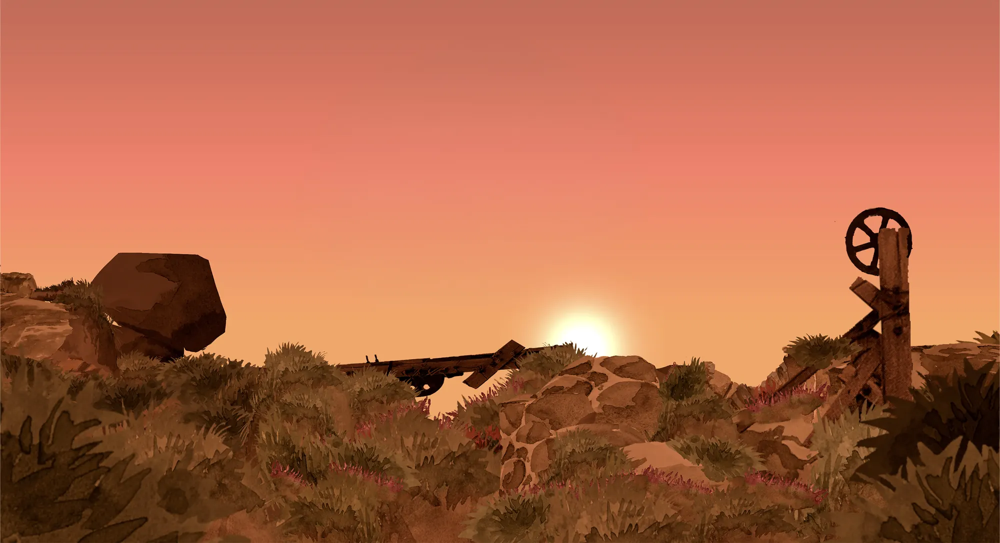
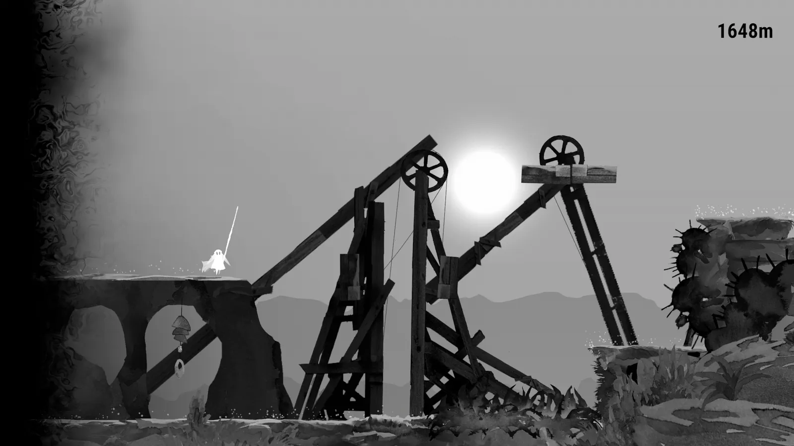
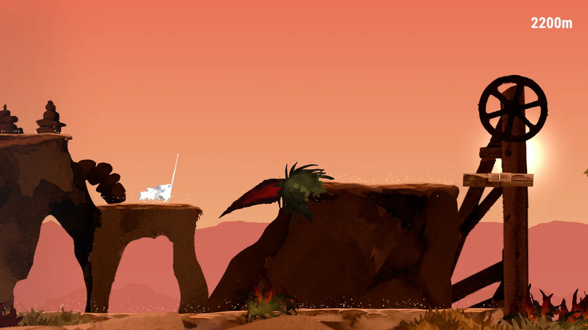
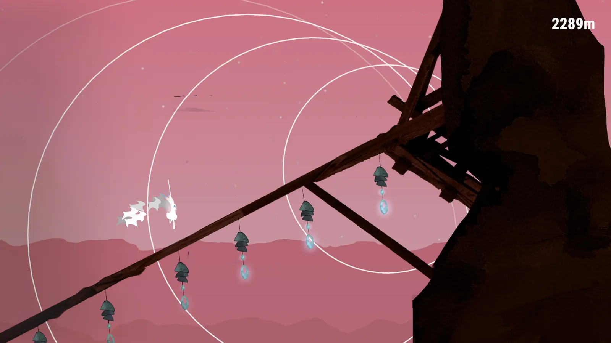
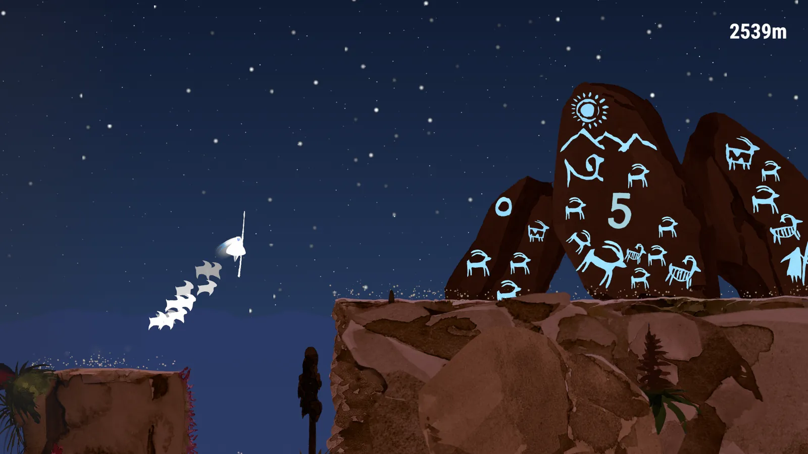
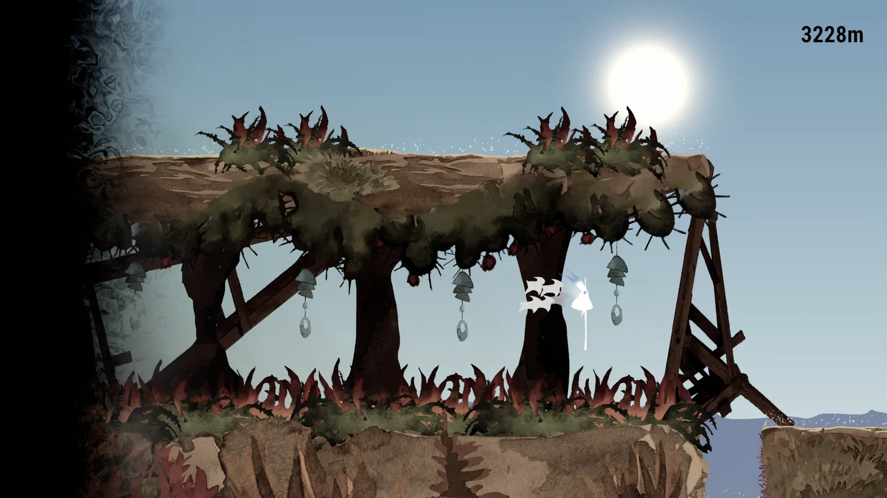

Work — 01 — University project
Silbo
An endless runner about movement. A shepherd crosses the ridges with his staff, ahead of a dark corruption, whistling the scattered goats back to the herd.
- Role
- Gameplay & systems programming, design, tech art
- Team
- 5 — SilboCAMPZ
- Engine
- Unity, C#
- Platform
- Windows, macOS — free

Silbo was a university project, made by five of us as SilboCAMPZ. It takes its name and its central mechanic from Silbo Gomero, the whistled language of La Gomera, and the rest of it from the way goats and sheep are herded across the Canary Islands. You play a shepherd running a landscape that never ends, and the reason to keep running is that the movement is good.
What I did
- Gameplay programming. The movement the whole game rests on — the jump, the two actions you chain into it, and the whistle that reaches out into the world around you.
- Systems and level generation. The run itself: terrain arriving ahead of the player, checkpoints to deliver goats to, and the distance and score that make one run comparable to the last.
- Design. Tuning what those verbs feel like in the hand, and how hard the landscape pushes back as the metres add up.
- Tech art. The look the game is remembered for: the parallax ridges, the whistle's expanding rings, and the way the palette turns over across a run.
Made with Adam, Zora, Tenairi and Clara. The game is credited on itch.io as AI assisted, with AI used for code — the same way I work now: models draft, I read and own what ships.
1648 m — the corruption
The colour goes out of the world
What you are running from is never spelled out, and the game is better for it. The clearest thing it does with the corruption is take the colour away: the sun, the rock, the scrub and the shepherd's own staff all drop to grey, and the only thing that has not changed is that you are still moving.
It is a cheap effect and an enormously effective one. Nothing about the layout tells you that you are in trouble — the palette does, at a glance, while your hands stay busy.

2200 m — the movement
One verb, and two ways to extend it
The runner is built on a jump you can extend with two further actions, so crossing a gap is a decision rather than a reflex. The staff is the reason it reads as herding instead of platforming: the shepherd vaults on it, and that single prop carries most of the game's identity before a word is said.
The landscape is drawn as flat silhouettes at three depths, which keeps the platform you have to land on unmistakable even when the screen is busy — the surfaces you can stand on are always the darkest, nearest layer.

2289 m — the whistle
The mechanic the game is named after
On La Gomera, shepherds talk across valleys in Silbo Gomero — a whistled form of Spanish that carries where a voice will not. That is the game's title and it is also its second input. The whistle is how you reach past the edge of your own jump: it opens things up, and it is how the goats know where you are.
On screen it is three expanding rings, and the bells strung along the herding frames light up as the rings pass through them. It costs almost nothing to draw and it makes an invisible mechanic legible — you can see exactly how far your whistle just carried.

2539 m — the herd
Your score is a line of goats behind you
Goats are scattered along the route, and getting one is only half of it — you then have to carry it to the next checkpoint without losing it. So the thing you are protecting is visible at all times: the goats fall into a line behind the shepherd and jump the gaps you jump, and a bad landing is expensive in a way you can see rather than read.
The count is carved into the rock as a petroglyph, next to painted goats and a painted herder, so even the score readout is doing atmospheric work instead of sitting in a corner of the HUD.

3228 m — first light
The sky keeps score too
Line the captures up by distance and the sky runs forward with them: dusk at 2200 m, deep pink at 2289 m, full night at 2539 m, and the first cold blue of morning by 3228 m. In a game with no level numbers and no map, the colour of the sky is the only progress bar there is — and it is the one that makes a long run feel like it went somewhere.
This is the far end of the loop the game is built for: an endless runner with a high-score table, where the thing you are actually chasing is a sky you have not seen yet.

In motion
What it looks like moving
Credits
Made by five people
Silbo is a SilboCAMPZ project. It is still listed as in development, and it is free.
- Adam
- Zora
- Tenairi
- Clara
- Paul Schwab (Ekasto)